Eu nunca tinha me interessado pelas edições anteriores desse fórum, nem por essa pra falar a verdade. Mas depois que eu soube que dois grandes amigos virtuais meus iriam (Julio Neves e Thobias Salazar), comecei a ponderar a hipótese de ir.
Tudo conspirou para a viagem dar certo, então a mulher concedeu o alvará de soltura e dois intrépidos amigos ex-Conectivos de Curitiba toparam ir junto. Estava formado o time para a viagem:
- Aurelio Marinho Jargas
- Leslie Harlley Watter
- Rudá Sumé Tente de Moura
- TOYOTA Banderante 89 SuperCharger XR3 GTi Luxo
O Rudá e o Leslie vieram de Curitiba até Floripa de ônibus na quarta à noite (dia 4), e no dia seguinte entulhamos a TOYOTA de tralhas e saímos às 7 da manhã em direção à Porto Alegre.
Foi praticamente a viagem toda debaixo de chuva forte (MAAAAALA), dando um trégua somente na divisa dos estados. Finalmente, entramos no Rio Grande do Sul TCHÊ, terra do chimarrão TCHÊ, do churrasco e dos farroupilhas TCHÊ! Mas logo ao cruzar a fronteira, para nossa surpresa nos deparamos com esta placa:
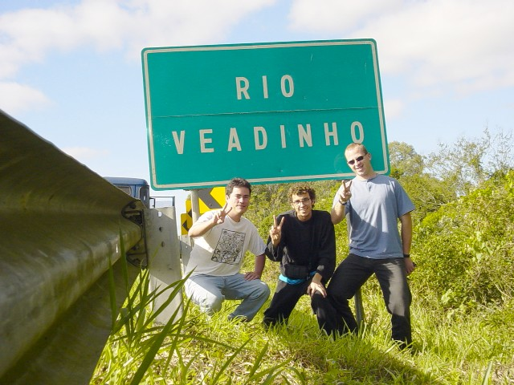
Mas BAH TCHÊ!!! Rodando mais um pouco encontramos o "Arroio do Pinto"... TCHÊ BARBARIDADE!
Mais algumas poucas horas de viagem, finalmente chegamos à capital Porto Alegre! Fomos direto à casa do amigo Domingos (ainda Conectivo), e sua esposa Bianca (ex-Conectiva), que gentilmente cederam espaço em sua casa para nos abrigar durante os dias do evento TCHÊ!
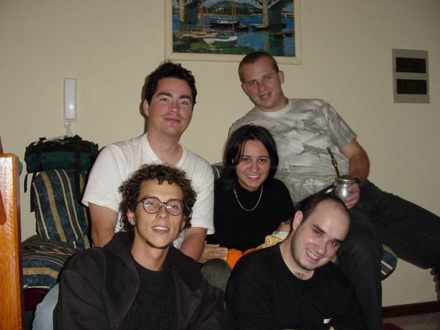
BAH TCHÊ! Escondido atrás da cabeça do Domingos está o Bernardo, herdeiro da família gaúcha, que nasceu há +- 6 meses atrás, TCHÊ!
Quanto ao Fórum TCHÊ, as palestras variavam entre chatas, mal preparadas, boas e excelentes. O legal é que para as palestras de gringos tinham uns aparelhinhos individuais de tradução, show de buela. No geral, achei o Fórum muito bom, organizado e interessante TCHÊ!
Mas TCHÊ, fiquei surpreso e assustado quando alguns ilustres desconhecidos me abordavam perguntando se eu era o Aurelio, e pediam para tirar foto e até para dar autógrafo (!!?!). TCHÊ! Será que virei Pop-Star e não sei? Se sim, logo logo vou poder comprar uma mansão e um iate! Ei, me mandem as fotos para eu colocar aqui também!
Mico da viagem: O Julio me concedeu a honra de ir ao palco e falar ao microfone no final de sua palestra sobre Shell-Script. Desculpa amigo Julio, você esperava que eu falasse algo de bom, mas com a surpresa da situação aliado ao total despreparo psicológico para falar em público naquele momento, tudo o que consegui falar foi "A página é AURELIO.NET e eu realmente não tenho nada pra falar". CapiaRRR do mato é assim meRRRmo... Meu consolo é que o Thobias conseguiu falar menos ainda! Hehehehe
Mas GURI, melhor ainda do que as palestras, foi a possibilidade de encontrar "ao vivo" amigos que eram apenas virtuais TCHÊ. Outros fazia muito tempo que eu não via:
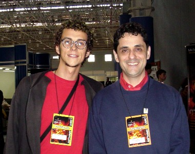 Rubens Queiroz (Dicas-L)
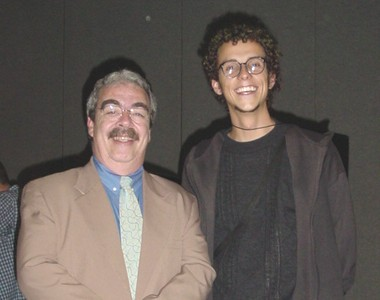 Julio Cezar Neves (Livro Shell Script)
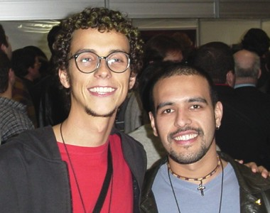 Marcus Vinicius "Paradise"
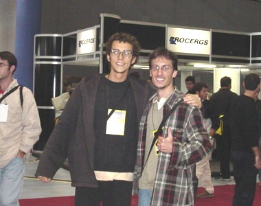 Thobias Salazar Trevisan (Funções ZZ)
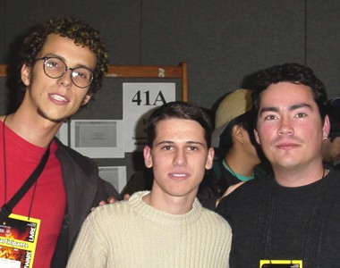 Augusto César Radtke
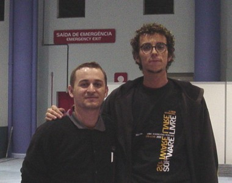 Klayson Bonatto
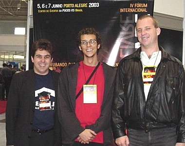 Alessandro Binhara
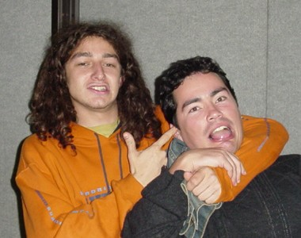 Marcelo Tosatti (Kernel)
Sessão EXTRA - Rudá encontra seus ídolos
Não há muito o que comentar, as fotos já dizem tudo &:) O Rudá deixou desabrochar seu lado fã e se desmanchou de alegria ao encontrar seus ídolos. Humildade do Rudá, pois ele mesmo é uma personalidade, tendo sido o protagonista principal do filme "O PESTE".
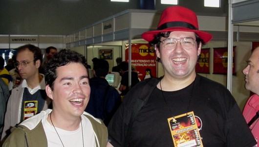 Rudá & Alexandre Oliva (gcc, RedHat)
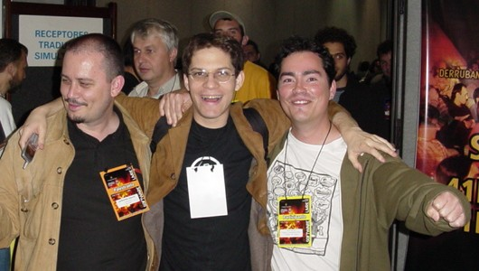 Rudá & Miguel de Icaza (Gnome, MONO)
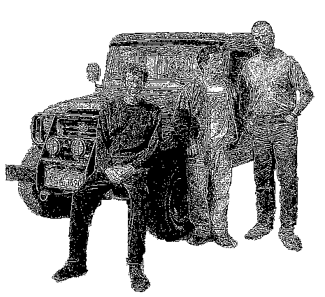